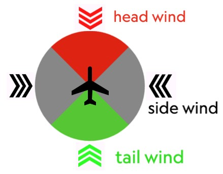

モジュール情報¶
I リアルタイムモニタリングデータ¶
1. 現在のパワー¶
リアルタイムのサイクリングパワー出力を表示します。
色について
このモジュールは背景色を表示できます。色の順序はConnectIQアプリで2つのスタイルから選択できます。ただし、ユーザーは個々の色やゾーン範囲をカスタマイズすることはできません。
- Garminスタイル：グレー-ブルー-グリーン-イエロー-オレンジ-レッド-パープル（ゾーン1～ゾーン7）
- Wahooスタイル：グレー-ダークブルー-ライトブルー-グリーン-イエロー-オレンジ-レッド（ゾーン1～ゾーン7）
2. 現在の速度¶
現在のサイクリング速度を表示します。単位はGarmin Connectでのユーザー設定（kph/mph）と一致します。
平均速度インジケーター¶
これは現在の速度モジュール内で現在の速度と平均速度を比較するためにオン/オフを切り替えられる設定です。ConnectIQアプリで設定できます。表示モードは「矢印」と「背景」の2種類があります。
- 「矢印」

- 上向き：平均速度より上
- 下向き：平均速度より下
- 表示なし：平均速度と同じ、またはライドが開始されていない
- 「背景」
- 赤：平均速度より下
- 緑：平均速度より上
3. 現在の心拍数¶
リアルタイムの心拍数データを表示します。
色について
このモジュールは背景色を設定できます。色の順序はConnectIQアプリで2つのスタイルから選択できます。ただし、ユーザーは個々の色やゾーン範囲をカスタマイズすることはできません。
- Garminスタイル：グレー-グレー-ブルー-グリーン-イエロー-レッド（<ゾーン1、ゾーン1～ゾーン5）
- Wahooスタイル：グレー-ブルー-グリーン-イエロー-オレンジ-レッド（<ゾーン1、ゾーン1～ゾーン5）
4. 現在のケイデンス¶
リアルタイムのケイデンス値を表示します。
5. 現在の高度¶
現在の高度を表示します。単位はGarmin Connectでのユーザー設定（m/ft）と一致します。
6. 現在の勾配*¶
現在の勾配を表示します。
*Garmin公式はデータインターフェースを提供していないため、計算されたデータには不正確さやエラーがある場合があります
色について
このモジュールは背景色を表示できます。色は対応する勾配に応じて変化しますが、ユーザーは色や勾配範囲をカスタマイズすることはできません。
| 例 |  |
 |
 |
 |
 |
|
|---|---|---|---|---|---|---|
| 勾配範囲 | < 0.5% | 0.5%~3.99% | 4%~7.99% | 8%~11.99% | 12%~19.99% | > 20% |
II 平均および累積データ¶
7. 3秒平均パワー*¶
過去3秒間の平均パワーを表示します。色の表示はリアルタイムパワーと同じです。
*Garmin公式はデータインターフェースを提供していないため、計算されたデータには不正確さやエラーがある場合があります
8. 5秒平均パワー*¶
過去5秒間の平均パワーを表示します。色の表示はリアルタイムパワーと同じです。
*Garmin公式はデータインターフェースを提供していないため、計算されたデータには不正確さやエラーがある場合があります
9. 10秒平均パワー*¶
過去10秒間の平均パワーを表示します。色の表示はリアルタイムパワーと同じです。
*Garmin公式はデータインターフェースを提供していないため、計算されたデータには不正確さやエラーがある場合があります
10. ラップ平均パワー*¶
現在のラップの平均パワーを表示します。
*Garmin公式はデータインターフェースを提供していないため、計算されたデータには不正確さやエラーがある場合があります
11. 平均速度¶
現在のアクティビティの平均速度を表示します。
12. アクティビティ時間¶
現在のアクティビティの継続時間を表示します。
13. ラップタイム*¶
現在のラップの継続時間を表示します。
*Garmin公式はデータインターフェースを提供していないため、計算されたデータには不正確さやエラーがある場合があります
14. 距離¶
現在のアクティビティの累積走行距離を表示します。
15. カロリー¶
現在のアクティビティで消費したカロリーを表示します。
III トレーニングメトリクス¶
16. 現在のパワーウェイト比¶
現在のアクティビティのリアルタイムパワーウェイト比をW/Kgで表示します。パワーはMyGahoo設定ページの入力から、体重はGarmin個人プロフィールページの設定から取得されます。
17. 3秒平均パワーウェイト比*¶
過去3秒間の平均パワーウェイト比をW/Kgで表示します。
*Garmin公式はデータインターフェースを提供していないため、計算されたデータには不正確さやエラーがある場合があります
18. 10秒平均パワーウェイト比*¶
過去10秒間の平均パワーウェイト比をW/Kgで表示します。
*Garmin公式はデータインターフェースを提供していないため、計算されたデータには不正確さやエラーがある場合があります
19. ラップ平均パワーウェイト比*¶
現在のラップの平均パワーウェイト比をW/Kgで表示します。
*Garmin公式はデータインターフェースを提供していないため、計算されたデータには不正確さやエラーがある場合があります
20. NP™（ノーマライズドパワー）*¶
現在のアクティビティのノーマライズドパワーを表示します。
データ損失のリスク
アクティビティ中にMyGahooフィールドを「再追加」したり、他のライディングモードに入ったりすると、このモジュールのデータはクリアされます。（ただし、Garmin自体が記録するアクティビティには影響しません。MyGahooのみがこれらのデータをゼロから再度蓄積し始めます）。
™ノーマライズドパワー（NP）およびトレーニングストレススコア（TSS）はPeaksware, LLCの登録商標です。
*Garmin公式はデータインターフェースを提供していないため、計算されたデータには不正確さやエラーがある場合があります
21. TSS™（トレーニングストレススコア）*¶
現在のアクティビティのトレーニングストレススコアを表示します。
データ損失のリスク
アクティビティ中にMyGahooフィールドを「再追加」したり、他のライディングモードに入った後に現在のモードに戻ったりすると、このモジュールのデータはクリアされます。（ただし、Garmin自体が記録するアクティビティには影響しません。MyGahooのみがこれらのデータをゼロから再度蓄積し始めます）。
™ノーマライズドパワー（NP）およびトレーニングストレススコア（TSS）はPeaksware, LLCの登録商標です。
*Garmin公式はデータインターフェースを提供していないため、計算されたデータには不正確さやエラーがある場合があります
IV 機材情報¶
22. ギア（歯数）¶
現在のチェーンリング/カセットの歯数を表示します。例：52/13
23. ギア（インデックス）¶
現在のチェーンリング/カセットのインデックス番号を表示します。例：1/7
24. ギア比¶
チェーンリングの歯数をカセットの歯数で割った現在の変速比を表示します。例：4.02
25. ギアチャート¶
ギア情報をグラフィカルに表示します。
V データ分析¶
26. リアルタイム左右バランス¶
現在の左右パワーバランスを表示します。%記号なしのパーセンテージとして表示されます。例：52-48
27. 3秒平均左右バランス*¶
3秒間の平均左右パワーバランス比を表示します。
*Garmin公式はデータインターフェースを提供していないため、計算されたデータには不正確さやエラーがある場合があります
28. パワーゾーンヒストグラム*¶
異なるパワーゾーンにおける時間分布を表示します。
データ損失のリスク
アクティビティ中にMyGahooフィールドを「再追加」したり、他のライディングモードに入った後に現在のモードに戻ったりすると、このモジュールのデータはクリアされます。（ただし、Garmin自体が記録するアクティビティには影響しません。MyGahooのみがこれらのデータをゼロから再度蓄積し始めます）。
*Garmin公式はデータインターフェースを提供していないため、計算されたデータには不正確さやエラーがある場合があります
29. 心拍ゾーンヒストグラム*¶
異なる心拍ゾーンにおける時間分布を表示します。
データ損失のリスク
アクティビティ中にMyGahooフィールドを「再追加」したり、他のライディングモードに入った後に現在のモードに戻ったりすると、このモジュールのデータはクリアされます。（ただし、Garmin自体が記録するアクティビティには影響しません。MyGahooのみがこれらのデータをゼロから再度蓄積し始めます）。
*Garmin公式はデータインターフェースを提供していないため、計算されたデータには不正確さやエラーがある場合があります
VI 環境情報¶
30. 時計¶
現在の時刻を表示します。
31. 風*¶
現在の風速と相対/絶対風向を表示します。
*Garmin公式はデータインターフェースを提供していないため、計算されたデータには不正確さやエラーがある場合があります
風速単位¶
- m/s：メートル毎秒
- KPH：キロメートル毎時
- MPH：マイル毎時
- ビューフォート風力階級：風力スケール、0～12レベル
風速レベル¶
風速レベルは矢印の数で示され、下図のように異なる数字が風速に対応しています。選択した風速単位がm/sでない場合でも、矢印の数は表示される数字ではなく正確な風速に基づいて計算されます。

絶対/相対風向¶
- 絶対方向：天気予報で示される風向、走行方向とは無関係
- 相対方向：現在の走行方向と風向の間の相対角度。例えば、西に向かって走行中に絶対風向が北から南へ向かう場合、相対風向は右から左へとなります。
風向の色¶
相対風向を表示する場合、矢印は風の角度に基づいて色分けされます。赤は向かい風（相対風が左前45°から右前45°まで）を示し、緑は追い風（相対風が左後ろ45°から右後ろ45°まで）を示し、黒は横風を示します。

設定¶
風モジュールは最適な表示のためにConnectIQアプリで設定する必要があります。詳細については天気設定モジュールを参照してください。
VII バーチャルLED¶
バーチャルLEDは画面の端に沿って設定できます。ユーザーは異なる位置のLEDを使用して異なる情報を表示できます。

リアルタイムパワー¶
バーチャルLEDは各ゾーンの量と色を表示します（以下の例では色のスタイルはGarminスタイルに設定）

3秒平均パワー¶
上記と同じです。
心拍ゾーン¶
バーチャルLEDは各ゾーンの量と色を表示します（以下の例では色のスタイルはGarminスタイルに設定）

平均速度インジケーター¶
バーチャルLEDは現在の速度と平均速度の関係を表示し、赤は遅れている（平均より低い）ことを示し、青はリードしている（平均より高い）ことを示します。

各LEDは10%のリードまたは遅れを表し、下の表に示されています。表ではリードを例として使用していますが、遅れも同じ原則に従います。
| 例 | 意味 |
|---|---|
 |
平均速度と同じ |
 |
現在のリード < 10% |
 |
10% < 現在のリード < 20% |
 |
現在のリード > 20% |
平均パワーインジケーター¶
バーチャルLEDは現在のパワーと平均パワーの関係を表示し、色の意味は上記と同じですが、各LEDは20%のリードまたは遅れを表します。表ではリードを例として使用していますが、遅れも同じ原則に従います。
| 例 | 意味 |
|---|---|
|
平均パワーと同じ |
|
現在のリード < 20% |
|
20% < 現在のリード < 40% |
|
現在のリード > 40% |
左右バランスインジケーター¶
バーチャルLEDは現在のペダリングパワーの左右バランスを表示します。各LEDは片側の5%のオフセットを表します。表では右シフトのペダリングを例として使用していますが、反対側も同じ原則に従います。
さらに、受信した左右バランス値が100-0または0-100の場合、エラー状態が表示されます。この状況は通常、デュアルサイドパワーメーターの片側の接続が切断されたり、最初のペダリング時に瞬間的な力がかかったりすることで発生します。
| 例 | L - R |
|---|---|
 |
50% - 50% |
 |
45~50% - 50~55%（55%を含まない） |
 |
40~45% - 55~60%（60%を含まない） |
 |
≤40% - ≥60% |
 |
0%-100%（または100%-0%） |
3秒左右バランスインジケーター¶
上記と同じです。